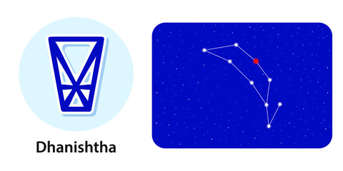

<
1st Pada: The first pada of this Nakshatra comes in the Leo Navamsa and is ruled by the Sun. It combines the effects of Mars, Saturn and the Sun, while concentrating on material achievements. Except for marriage, the native will achieve success in all fields.
2nd Pada: The second pada of this Nakshatra comes in the Virgo Navamsa ruled by Mercury. Here the native’s communication skills are good. Again marriage is difficult here, but athletic and musical skills will surface.
3rd Pada: The third pada of this Nakshatra comes in the Libra Navamsa ruled by Venus. It makes the native happy-go-lucky. Due to this third Pada, marriage will be a success. The native will excel in performing arts, astrology, and spirituality.
4th Pada: The fourth pada comes in the Scorpio Navamsa ruled by Mars. There is a surfeit of energy, and the native will excel in outdoor games, and physical activities will require a lot of energy. The native will care for the under-privileged, but will not be able to avoid the friction at home.
“most famous”, also Shravishthā “swiftest”α to δ Delphini
Lord: Mangala (Mars)
Symbol : Drum or flute
Deity : Eight vasus, deities of earthly abundance
Stone: Coral is your lucky stone.
Lucky numbers : 9 and 8
Lucky Day:Wednesday and Friday
If a baby born in this nakshatra give her or him a name with starting letter “G”.
These persons should not live in North facing houses.
Persons born in Dhanishta nakshatram will have good taarabalam with following nakshatrams:
Arudra, Pushyami, Magha, Uttara, Hasta, Swati, Anuradha, Moola, Uttarashada, Sravanam, Satabisham, Uttarabhadra, Aswini, Kritika, Rohini.
Indian zodiac: 23°20′ Makara – 6°40′ Kumbha
Western zodiac 19°20′ Aquarius – 2°40′ Pisces
Dhanishta Nakshatra
Characteristics male
The native-born in the Dhanishta Nakshatra will be an expert at his work. He is very intelligent and has good general knowledge. He resents doing anything by thought, word or deed that may cause problems for others. It has been observed that he possesses a religious spirit. He does not like to stray too much from his sphere of activities. Also, he avoids arguments unless they become absolutely necessary. This native is, however, vindictive, and has great reserves of patience, so that he will wait for ages and ages for the right time to get his pound of flesh back.Profession male
It has been observed that the natives of this Nakshatra turn out to be scientists or historians. As they are very good at keeping a secret, they are well-suited for intelligence agencies, or the private secretaries of business tycoons. He is way ahead of others in intelligence and oratory. So he can make a good lawyer too. He will make good progress after the age of 24. He is likely to be engaged in a profession where he will have to trust others, but he must ensure that he does not do it blindly.Compatibility male
As far as his family is concerned he will have the dominant hand. His relatives may keep creating problems for him out of jealousy. He favours his siblings. He will inherit a lot of ancestral property. However, he may not get along too well with his in-laws. If he has any limitations, they will be made good by the stars of his spouse, who will be literally an incarnation of Goddess Lakshmi.Health male
The health of the native-born in this Nakshatra will not be very good. He will not be very conscious of taking preventive care but will swing into action only when some health problem aggravates. He is prone to cough, cold and anaemia.Characteristics female
She is very ambitious in life and is also prone to blowing up her money unnecessarily. However, she is of a humble disposition. She has great compassion for the underprivileged. She can tend to be dominant but will have to curb this tendency in the best interest of her family.Profession female
The female of the Dhanishta Nakshatra tends to have a little bit of a variety of talents. Some may want to go into the field of education, some into literature and yet others may want to pursue a career in science.Compatibility female
The female native of this Nakshatra will be an expert in running domestic affairs.Health female
The female natives of the Dhanishta Nakshatra are very careless about their health until a problem becomes very severe. They are generally prone to health problems such as anaemia, uterus disturbances, cough and blood-related ailments.Dhanishta Nakshatra Padas
1st Pada: The first pada of this Nakshatra comes in the Leo Navamsa and is ruled by the Sun. It combines the effects of Mars, Saturn and the Sun, while concentrating on material achievements. Except for marriage, the native will achieve success in all fields.
2nd Pada: The second pada of this Nakshatra comes in the Virgo Navamsa ruled by Mercury. Here the native’s communication skills are good. Again marriage is difficult here, but athletic and musical skills will surface.
3rd Pada: The third pada of this Nakshatra comes in the Libra Navamsa ruled by Venus. It makes the native happy-go-lucky. Due to this third Pada, marriage will be a success. The native will excel in performing arts, astrology, and spirituality.
4th Pada: The fourth pada comes in the Scorpio Navamsa ruled by Mars. There is a surfeit of energy, and the native will excel in outdoor games, and physical activities will require a lot of energy. The native will care for the under-privileged, but will not be able to avoid the friction at home.